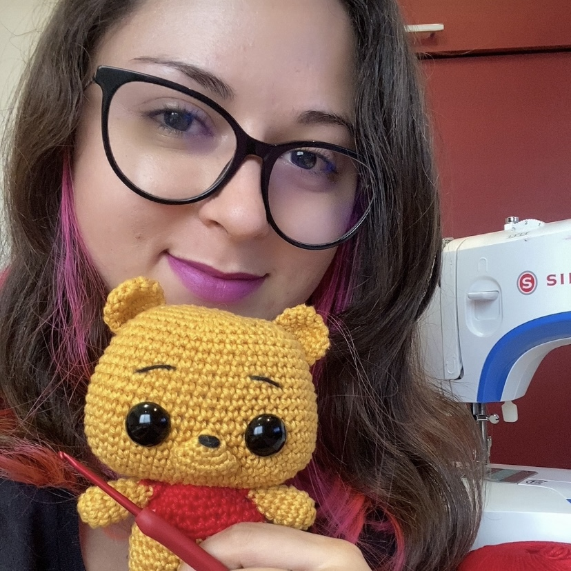

|  |
Sobre MimOlá! Meu nome é Beatriz Khey e tenho 26 anos. Sou uma curitibana estudante de Engenharia de Software e dona do meu ateliê de crochê. Desde pequena, sempre fui apaixonada pelas ciências exatas e pelas artes. Quando criança gostava de dividir meu tempo entre olimpíadas de matemática, trabalhos manuais e aulas de balé. Com o passar dos anos na escola, minha paixão pela matemática floresceu e eu sabia que precisava dela na minha vida para sempre. Quando me formei no ensino médio eu me mudei para Florianópolis e comecei o curso de bacharelado em Matemática na UFSC. Eu amei todo o horizonte de novos conhecimentos que se abriu mas sentia falta de algo mais pessoal, alguma forma de me expressar. Depois de muito pesquisar e me interessar por diversas áreas como Economia, Filosofia, Física e Psiquiatria, eu me deparei com uma nova modalidade de trabalho: home office e freelances na área da engenharia de software, mais especificamente no desenvolvimento de sites e aplicativos. A ideia me pareceu muito atraente, eu poderia aplicar meu raciocínio lógico matemático e minha criatividade artística em projetos variados. Além disso, a possibilidade de ter um horário flexível é perfeita para que eu possa me dedicar aos meus outros interesses e projetos pessoais, como o crochê. Com 6 anos eu aprendi a arte do crochê e adorei, andava sempre com um fio e agulha crochetando algo. Na época era um passatempo e eu nunca imaginei que um dia seria uma parte central da minha vida. Com as cobranças da escola aumentando eu acabei deixando o crochê de lado para me focar nos estudos. Depois de muitos anos, em 2023, eu estava relembrando dos meus antigos passatempos e encontrei algumas linhas e agulhas e resolvi reviver o hobby como uma terapia nas pausas de estudos. Começou como uma forma de descarregar o estresse mas logo a sensação de criar coisas tão lindas e fofinhas me encheu de felicidade e eu percebi que era mais que um hobby pra mim. Comecei a estudar e aprender muitas técnicas diferentes, e descobri que por trás dos fios e pontos há uma linda estrutura matemática. Eu encontrei minha vocação! Arte e matemática entrelaças, perfeito! Eu fiquei tão empolgada que comecei a imaginar como eu poderia me tornar uma crocheteira profissional mas sem abandonar a carreira na engenharia. Eu comecei com minha presença online no Instagram e logo vi que poderia aproveitar muito o curso de Engenharia de Software para montar meu negócio. Comecei a ter várias ideias de ferramentas que eu poderia desenvolver para apoiar minha empreitada. Começando com o site da minha marca, incluindo meu portfólio, loja e área para solicitações de encomendas. Também tenho interesse em criar um app de gerenciamento de inventário personalizado para crocheteiras além de outras soluções que apoiam não só o meu negócio mas de muitas mulheres como eu, que veem no crochê um futuro. |